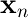
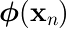
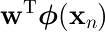
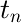
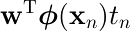
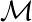
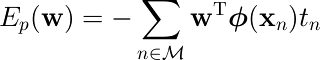

パーセプトロンアルゴリズム
4.1.7
naoya_t
2012.8.5 PRML復々習レーン
naoya_t
2012.8.5 PRML復々習レーン
時間遡行を何度繰り返してもワルプルムルの夜を倒せない…
秋葉原の書泉ブックタワーでPRMLに一目惚れ。
面白そうな教科書だし図版が綺麗だったので衝動買い。
難しくて１人で読める気がしないので、当時住んでた墨田区の公民館で読書会を開いてみたのが第1回 (2009.5)。その後も公民館を転々としながら細々と開催。
万単位の戦闘力を持つガチ勢が次々到来。一方で初期の参加者は次々脱落。
トピックは追っているつもりだけれど、議論と数式展開がもはや地球人の肉眼では見えない…
PRML hackathonを2回開催（＠曳舟文化センター）
感動の最終回は参加者16名。
訳者の1人@shima__shimaさんがスペシャルゲストに！
本レーンはゴールが見えてきたけれど、1周読んでみて振り返ってみると理解の粗さが目立つ。
＼もう1周しようず／
Shibuya.lispでお世話になっていたECナビ（現VOYAGE GROUP）さんの広い会議室を借りて再スタート。本レーンと交互に開催。(2010.5)
新たなガチ勢が到来し最大36人。
大臣に褒められた人、うんこ漏らしたとか言う人、etc…
but
幹事の体調不良により開催できず。
引き継ぎがちゃんとできずにフェードアウト…
復習レーンの再開を求める声が多かったがなかなか手を付けられないまま年月が過ぎ…
幹事役で回し続けるのは色々しんどい
幹事業を引き継ぐなり分散化するなりして再開しよう
というわけで
＼とりあえず有志でキックオフだけでもやろうず／
そんな折、DeNAさんがヒカリエに引っ越してきた
＼ヒカリエでPRMLキックオフやりたい！／
と言っていたら showyouさんのお陰で実現 (2012.5)
幹事業務も有志の皆さんが快く引き受けて下さいました：
| 司会進行（＆アイスブレイク） | sleepy_yoshiさん |
| 会場（＆じゃんけん） | showyouさん |
| 出欠＆ATND | Prunus1350さん |
（この場を借りて御礼）
お陰様で今では最後列の席で絶賛一般参加者しています。
それにしても今回は最初からガチ勢しか来てない…
※ステマ注意※
スタンフォード大CS学部の
現時点では提供されている講義はCSを中心とした科学系が大半だが、今後人文系の講義も増やしていくとのこと。
Machine Learning (Andrew Ng)
Probabilistic Graphical Models (Daphne Koller)
Natural Language Processing (Dan Jurafsky, Christopher Manning)
視覚と脳の機能をモデル化した線形分離アルゴリズム。
Frank Rosenblatt (1928-1969) が50年以上前 (1958) に提案。 ニューラルネットワーク研究の礎として、パターン認識アルゴリズムの歴史の中で重要な地位を占めてきた。
当初は電動可変抵抗や電気モーターを利用したアナログハードウェアとして実装され、簡単な形や文字を識別するための学習などに用いられた。
単純なパーセプトロンは線形分離不可能な問題を解けないが、多層化し誤差逆伝播を行うことで線形分離不可能な問題にも適用できるようになった。
入力データ  （に非線形変換 を適用した特徴量 ）に対し、  の値が クラスC1なら正、C2 なら負になるような最適パラメータ を学習する。
誤分類されるパターンが多ければ大きく、少なければ 0 に近づくような誤差関数を設定し、 確率的勾配降下法によって を求める。
誤識別したパターンの総数を誤差関数とすれば自然だが、 誤差が の区分的な定数関数であり、 勾配がほとんどの場合 0 となってしまうため勾配降下法が効かない。
そこで別の誤差関数を考える。
目標変数  の値を { -1, +1 } とすれば、  は 正しく分類される場合に正、誤分類なら負の値を取る。
誤分類された全サンプル集合  に対し定義される
をパーセプトロン規準とし、これを最小化する を確率的勾配降下法で求める。
§3.1.3 (pp.141-142) 参照
個人的には大規模すぎるデータをシャッフルして（バッチではなく）１つずつ扱うのを「確率的 (stochastic) 勾配降下法」、次々現れるデータをオンライン的に扱うようなよくあるケースは「逐次的 (sequential) 勾配降下法」と呼ぶのがしっくりくる
結局まあどっちでもいい
厳密解が存在する場合（＝学習データ集合が線形分離可能な場合）には、このアルゴリズムは有限回の繰り返しで厳密解に収束することが保証される。
とはいえ収束に必要な「有限回」はかなり多いので、実用的には分類不能なのか収束が遅いのか収束するまでわからない。
% データ読み込み
data = load('fig47dat.txt');
x = data(:, 1:2);
y = data(:, 3);
% w を適当に初期化
w = rand(1,2) * 0.001;
% η:学習率パラメータ
eta = 1;
% 確率的勾配降下法
maxiter = 100;
for t = 1:maxiter
plotData(x, y, w, t);
s = (x * w‘) .* y;
bad = find(s < 0);
if length(bad) == 0
break;
end
w += sum((x(bad,:) .* [y(bad) y(bad)]) * eta);
end
function plotData(x, y, w, t)
a = w(1,1); b = w(1,2);
figure; hold on;
title(sprintf('iter #%d', t));
axis([-1 1 -1 1]);
pos = find(y > 0); plot(x(pos,1), x(pos,2), '+b');
neg = find(y < 0); plot(x(neg,1), x(neg,2), '+r');
% 誤分類されたものに◯
s = (x * w‘) .* y;
bad = find(s < 0);
plot(x(bad,1), x(bad,2), 'og', 'markersize', 10);
% 決定境界に線を引く: ax + by = 0
if abs(a) <= abs(b)
plot([-1 1], [a/b -a/b], '-k', 'LineWidth', 1);
else
plot([b/a -b/a], [-1 1], '-k', 'LineWidth', 1);
end
hold off;
end
※データ (fig47dat.txt) は図4.7を見て適当に作成したもの
-0.75 0.9 1 -0.77 0.6 1 -0.53 0.65 1 -0.4 0.75 1 -0.1 -0.25 1 0.25 0.75 -1 0.4 -0.5 -1 0.45 0.3 -1 0.65 -0.9 -1 0.95 0.9 -1
plotData() 関数に w = [0 0] 等を渡した場合のチェックを省いています。（完全なコードは発表資料と一緒に github に上げてあります）